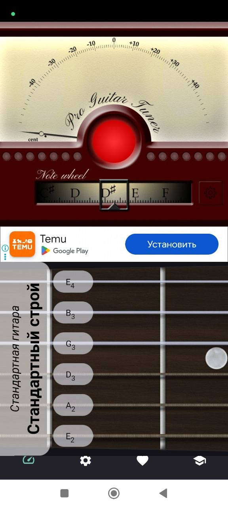
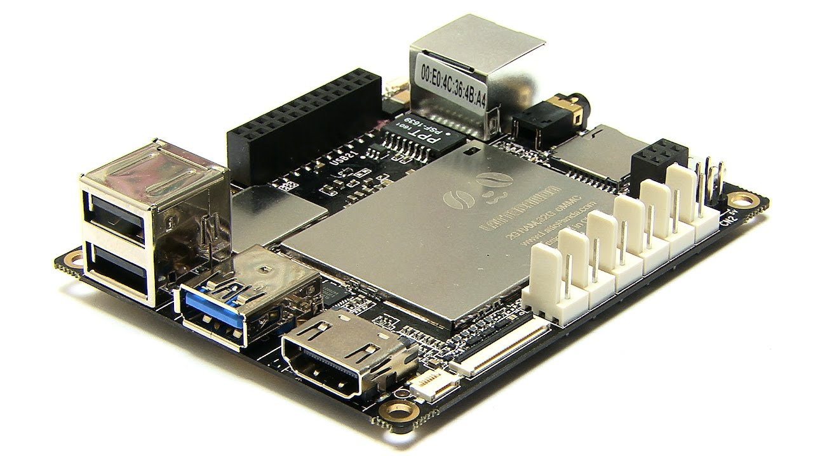
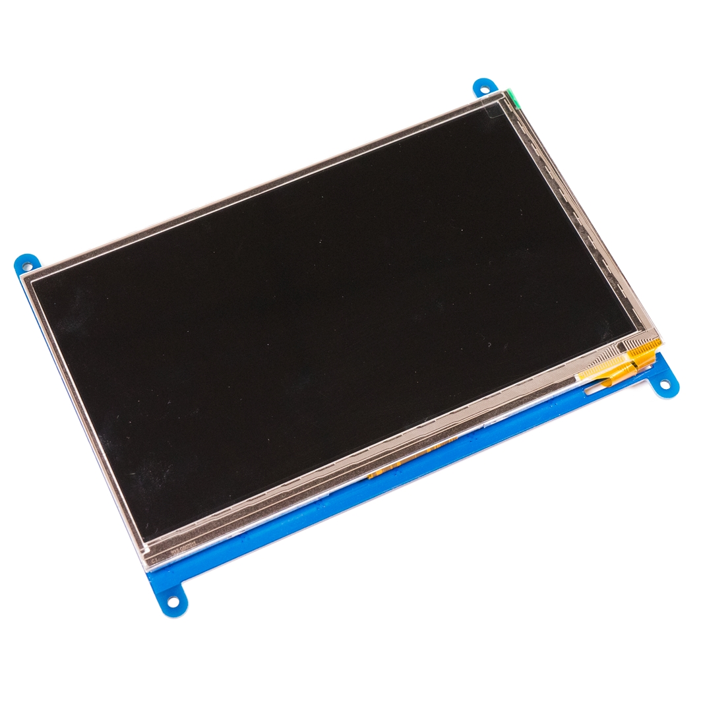
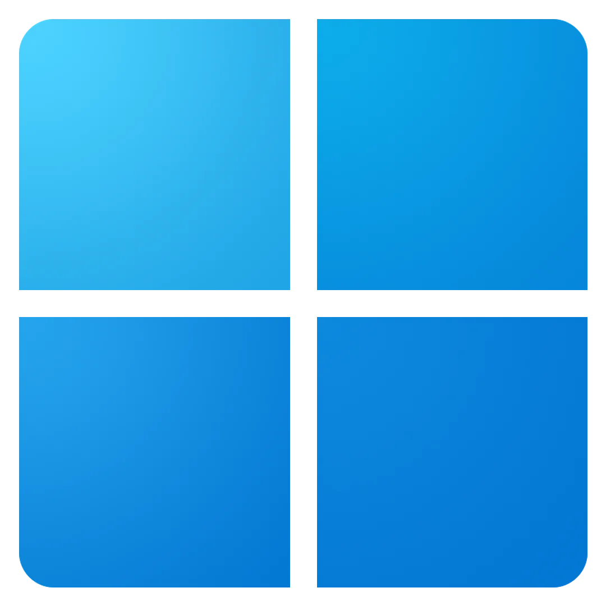
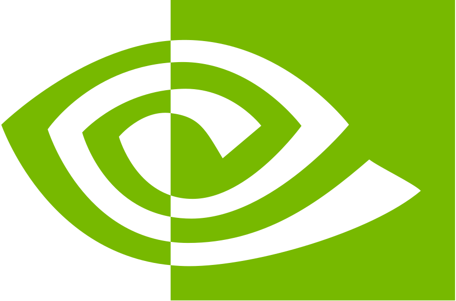
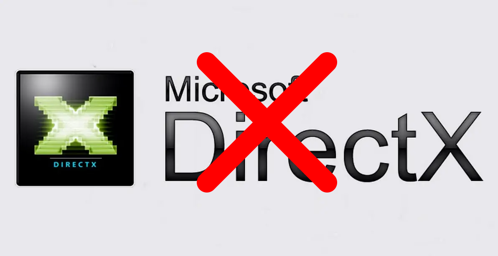
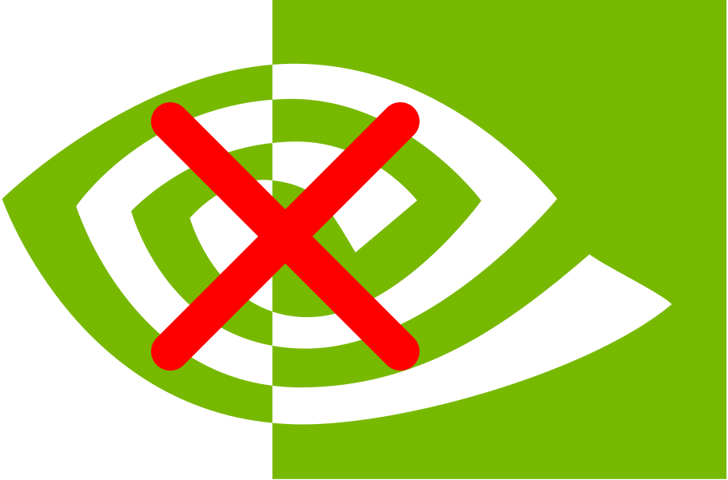
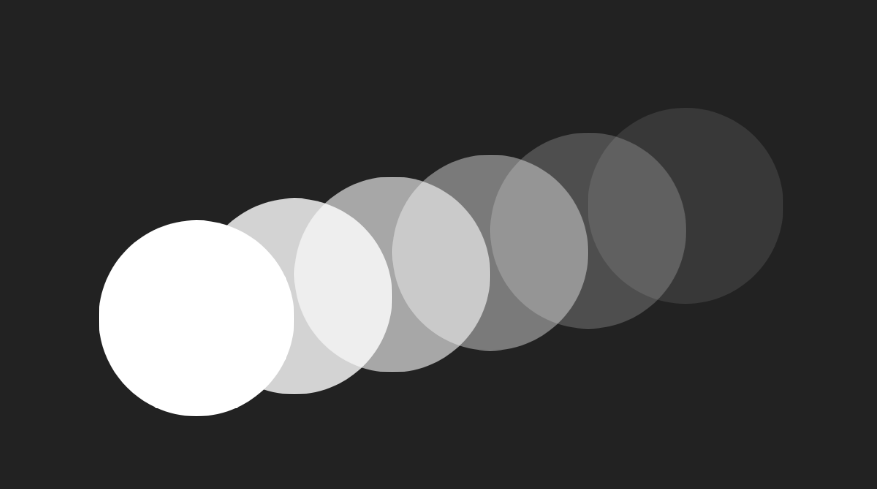
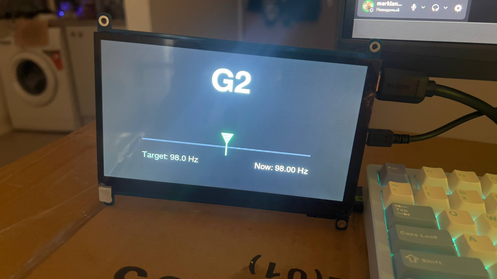

Рибіцький Марк
Гітарний тюнер
Чому обрав робити гітарний тюнер
Усі варіанти які були або платні
Або в тебе постійно реклама


Опираючись на це було створено альтернативу
Гітарний тюнер з таких компонентів як:
Одноплатний комп'ютер Pandas

Та OLED дисплей який ми під'єднаємо по HDMI

Тільки є одне АЛЕ
Є бажання зробити гарний UI
A на платі немає графічної оболочки
Якщо по простому на прикладі Windows 11
Шлях від системи до дисплея
Windows 11

Direct X
Nvidia

Monitor
І проблема в нас в тому що в нас цього немає


Тому все що ми хочемо побачити на дисплеї
Ми маємо малювати самі, вручну
В нас є проблема в тому що коли ми на звичайному комп'ютері
То зображенням займається Nvidia
А Nvidia в свою чергу кожен кадр робить з нуля і повністю

А звичайна платка таке робити не зможе
Але є рішення і для таких не потужних пристроїв
FB0 (Frame Buffer)
- Це файл пристрою, який представляє графічний вивід комп'ютера (екран). Він дозволяє програмам взаємодіяти з відеокартою або дисплейним контролером напряму, записуючи дані про колір пікселів безпосередньо в пам'ять відеопам'яті.

Якщо не перечитувати вам усю документацію та без великої кількості термінології
FB0 це ніби файлове сховище де ми можемо будувати свою картинку
Плюсом такого підходу те що нам не обов'язкого робити кожен кадр з нуля
Ми можемо додати на екран картинку і вона там залишиться пока ми не зробемо перезапис пам'яті!
А раз такі справи то це значно полегшує задачу для нашої платки!
Це була найважча частина проекту
| 1. Дослідження теми |
| 2. Перша робоча версія |
| 3. Оптимізація |
Для другої частини з гітарою було легше
Просто треба брати звук та брати його частоту
А в кожної ноти своя частота
(Стандартний стрій на гітарі)
| Нота | Частота |
|---|---|
| e | 330 Hz |
| B | 247 Hz |
| G | 196 Hz |
| D | 145 Hz |
| A | 110 Hz |
| E | 82 Hz |
І в кінці я вже міг мати змогу не використовувати різні застосунки
І тепер...
... Я маю змогу ...
... не використовувати різні застосунки
Тепер!...
... В мене ...
... є свій власний гітарний тюнер!
